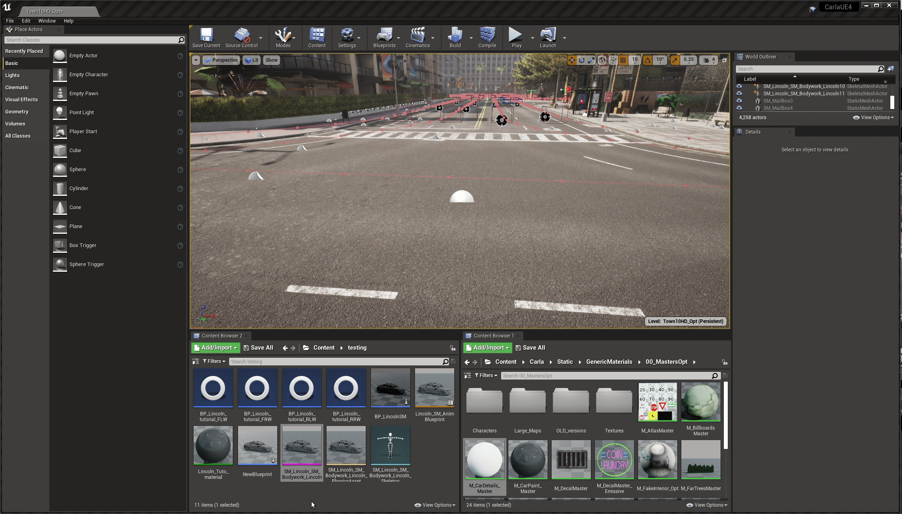
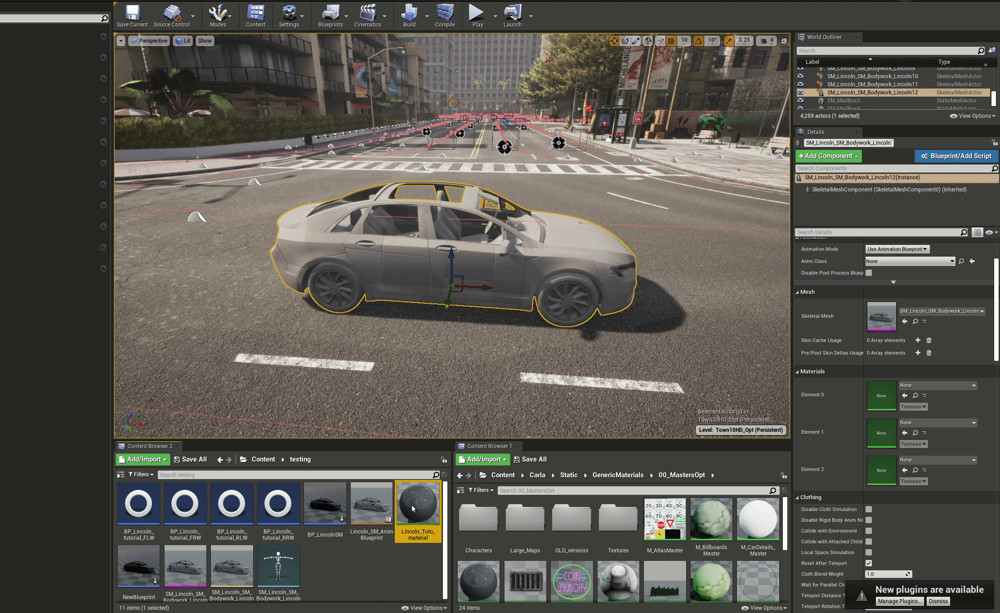
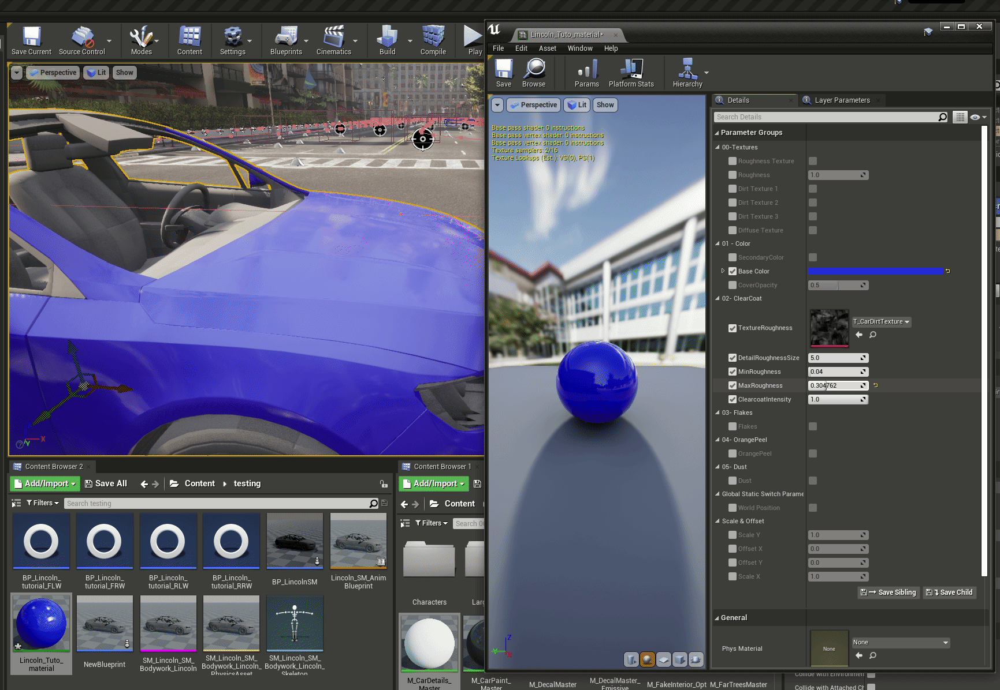
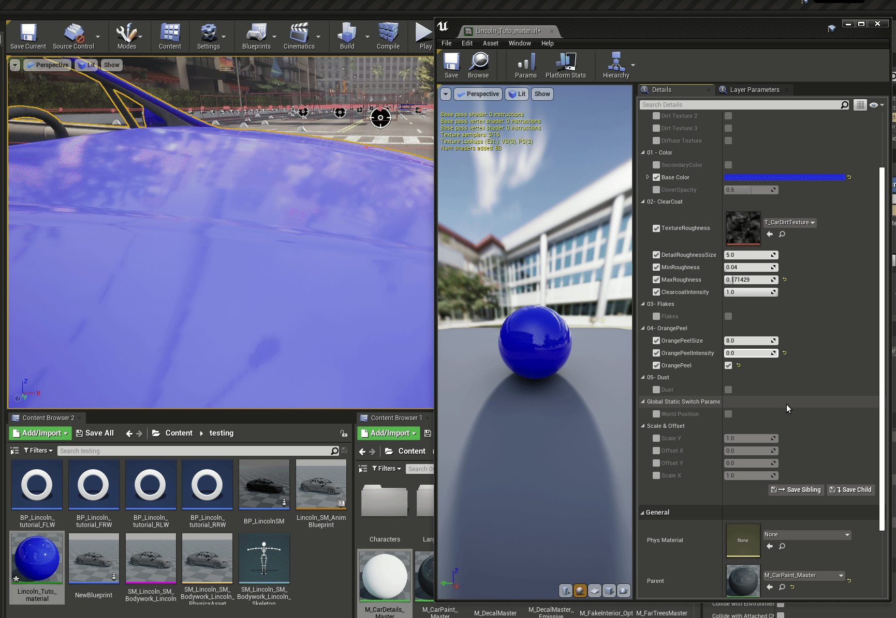
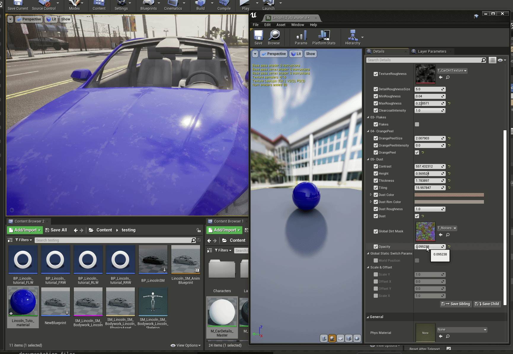

Content authoring - vehicles materials
Once you have your vehicle imported as a basic asset with the mesh and blueprints laid out, you now want to add materials to your vehicle to facilitate photorealistic rendering in the Unreal Engine, for maximum fidelity in your machine learning training data.
The Unreal Editor boasts a comprehensive materials workflow that facilitates the creation of highly realistic materials. This does, however, add a significant degree of complexity to the process. For this reason, CARLA is provided with a large library of material prototypes for you to use without having to start from scratch.
Applying a material to your vehicle
CARLA provides a prototype material for replicating the glossy finish of vehicles that can mimic numerous different types of vehicle paint jobs and features. Open Unreal editor and in the content browser, locate the material in Content > Carla > Static > GenericMaterials > 00_MastersOpt. The basic material is called M_CarPaint_Master. Right click on this material and choose Create Material Instance from the context material. Name it and move it into the folder where your new vehicle content is stored.
In the Unreal Editor, move the spectator to a point near the floor and drag the skeletal mesh of the vehicle from the content browser into the scene, the body of your vehicle will now appear there.

Now, in the details panel on the right hand side, drag your new material instance into the Element 0 position of the Materials section. You will see the bodywork take on a new grey, glossy material property.

Double click on the material in the content browser and we can start editing the parameters. There are a numerous parameters here that alter various properties that are important to mimic real world car paint jobs. The most important parameters are the following.
Color - The color settings govern the overall color of the car. The base color is simply the primary color of the car this will govern the overall color:

Clear coat - the clear coat settings govern the appearance of the finish and how it reacts to light. The roughness uses a texture to apply imperfections to the vehicle surface, scattering light more with higher values to create a matte look. Subtle adjustments and low values are recommended for a realistic look. Generally, car paint jobs are smooth and reflective, however, this effect might be used more generously to model specialist matte finishes of custom paint jobs.

An important parameter to govern the "shininess" or "glossiness" of your car is the Clear Coat Intensity. High values close to 1 will make the coat shiny and glossy.
Orange peel - finishes on real cars (particularly on mass produced cars for the general market) tend to have imperfections that appear as slight ripples in the paint. The orange peel effect mimics this and makes cars look more realistic.

Flakes - some cars have paint jobs that include flakes of other material, such as metals or ceramics, to give the car a metallic or pearlescant appearance, adding extra glints and reflections that react in an attractive way to light. The flakes parameters allows CARLA to mimic this. To mimic metallic finishes, it would be

Dust - cars often accumulate grease and dust on the body that adds additiomal texture to the paint, affecting the way it reflects the light. The dust parameters allow you to add patches of disruption to the coat to mimic foreign materials sticking to the paint.
